강릉, 맞춤
추천일정
입니다.
바다·카페·유산을 하루 동선에 담았어요. 북부·도심·남부로 나눠 여행해요.
Day 1
Day 2
Day 3
1
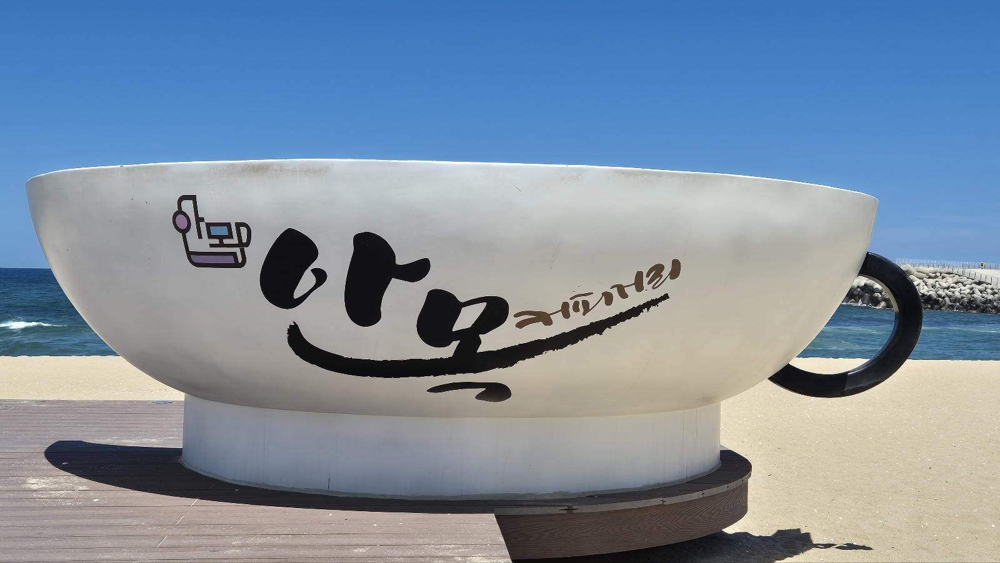
안목 커피거리
cafe street ·
강원특별자치도 강릉시 창해로 일대
바다 보며 로스터리 카페 투어. 아침 산책+브런치로 시작.
2
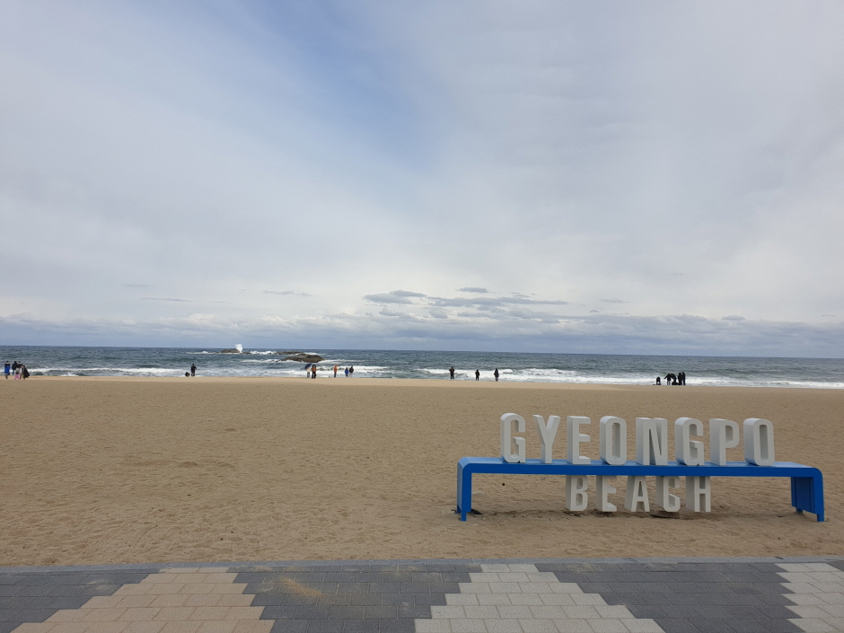
경포해변
beach ·
강원특별자치도 강릉시 창해로 514
강릉 대표 해변. 보드대여/산책데크/포토스팟 풍부.
3
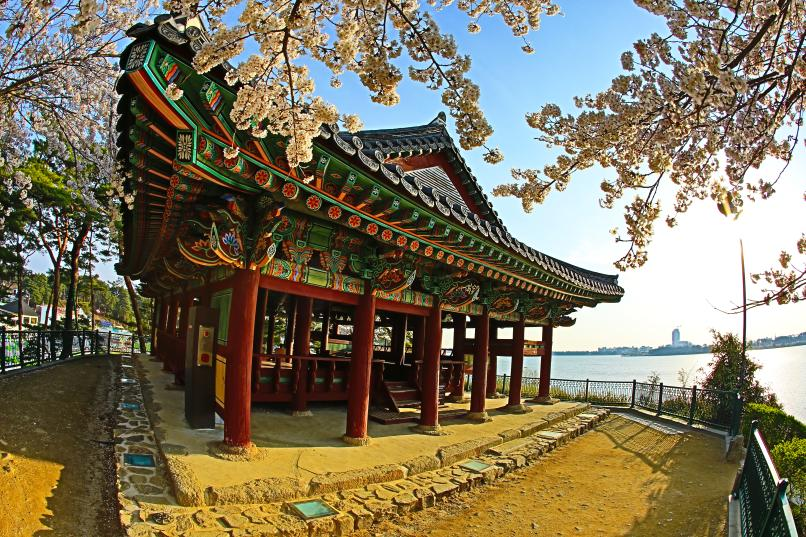
경포대 & 경포호
view ·
강원특별자치도 강릉시 저동 33-6
호수 순환 산책+정자 뷰. 벚꽃·단풍 시즌 특히 아름다움.
4
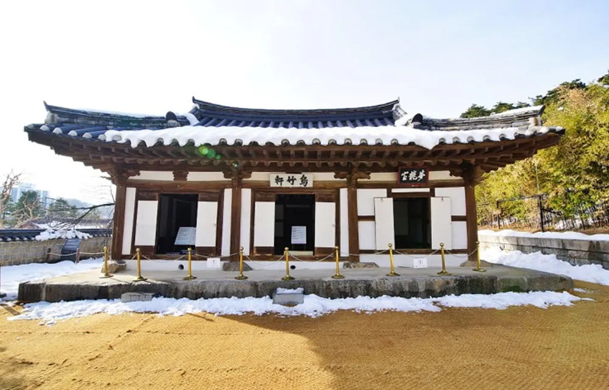
오죽헌·시립박물관
heritage ·
강원특별자치도 강릉시 율곡로3139번길 24
신사임당·율곡 이이 유적. 흑죽(오죽) 정원 산책.
5
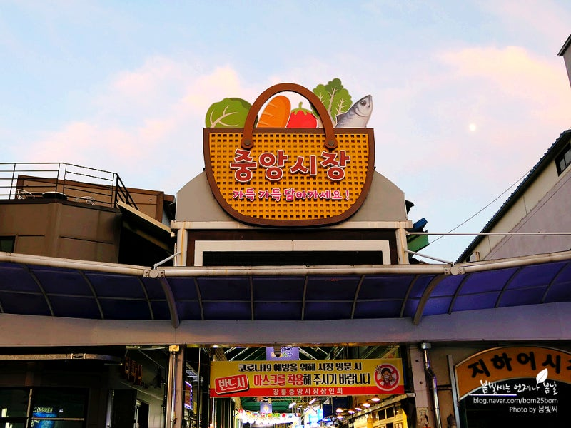
강릉 중앙시장
food market ·
강원특별자치도 강릉시 금성로 21
초당두부/장칼국수/순두부 아이스크림 등 길거리 먹거리.
1
정동진 모래시계공원
sunrise ·
강원특별자치도 강릉시 강동면 정동진리
일출 명소. 모래시계·철길 포토존, 레일바이크 연계 가능.
2
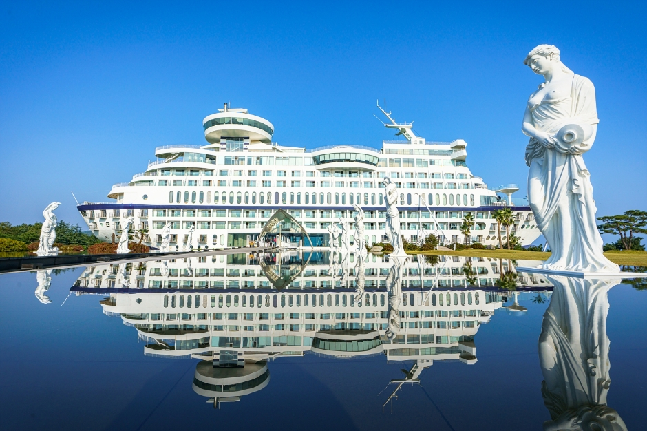
모래시계 소나무
view ·
강원특별자치도 강릉시 강동면 정동진리
바닷가에 있는 소나무. 바다배경과 절묘하게 어우러져 촬영지로도 유명.
3
하슬라 아트월드
art museum ·
강원특별자치도 강릉시 강동면 정동해안로 1441
바다 보이는 조각공원·미술관. 감성 사진 스팟 많음.
4
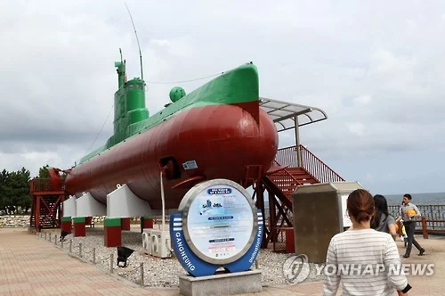
피노키오-마리오네트 미술관
museum ·
강원특별자치도 강릉시 강동면 율곡로 1441
피노키오와 마리오네트를 함께 볼 수 있는 국내 유일 미술관.
5
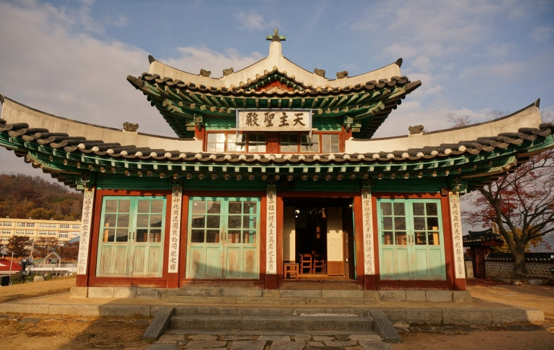
전등사
beach ·
강원특별자치도 강릉시 강동면 정동등명길 42-10
바닷가에 있는 절. 경치가 좋고 건축물이 유려.
1
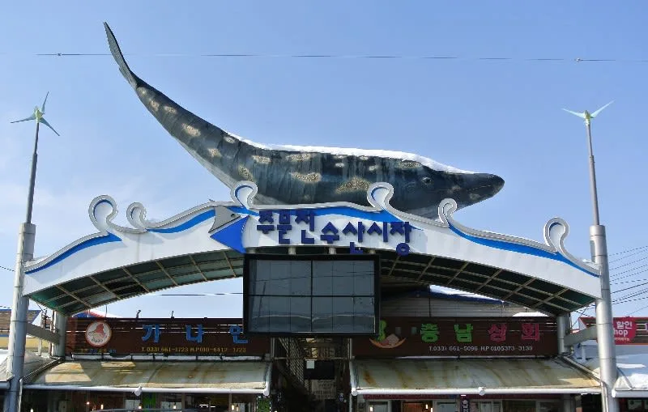
주문진 수산시장
seafood market ·
강원특별자치도 강릉시 주문진읍 주문로 16
회/대게/해산물 한상. 구입 후 위판장 식당에서 식사 가능.
2
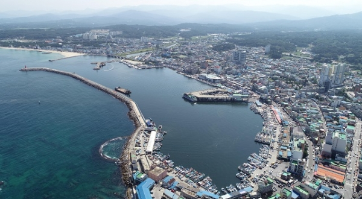
주문진항
spot ·
강원특별자치도 강릉시 주문진읍 교항리
신선한 해산물을 즐길 수 있는 곳. 다양한 해산물이 즐비.
3
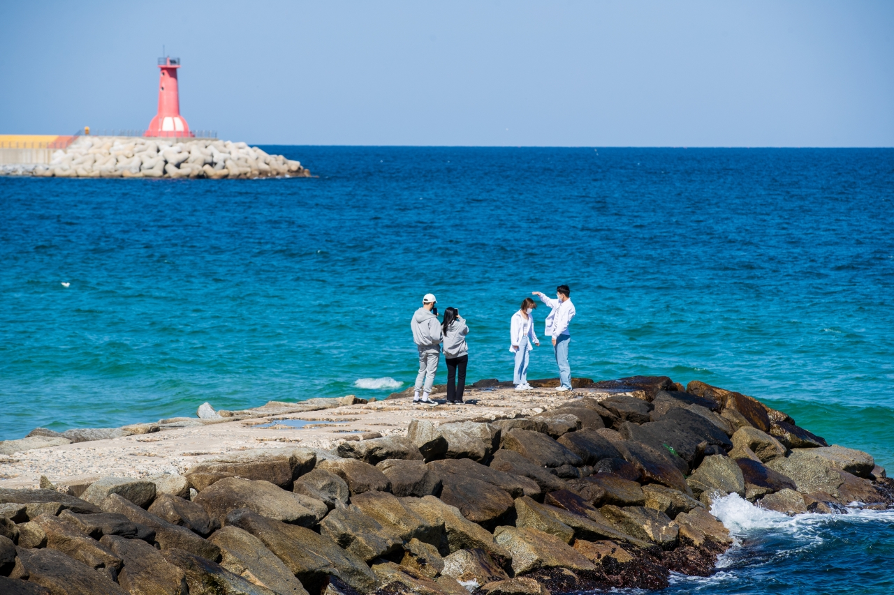
영진해변
beach ·
강원특별자치도 강릉시 주문진읍 영진리 일대
드라마 촬영지로 유명. 잔잔한 파도와 넓은 모래사장.
4
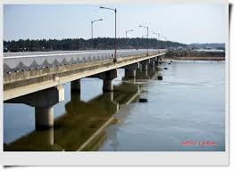
영진교
lake walk ·
강원특별자치도 강릉시 연곡면 동덕리 1289-5
바다와 맞닿은 담수호. 다리위에서 바다를 모두 볼 수 있는 희귀한 곳.
5
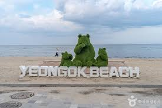
연곡해변
beach ·
강원특별자치도 강릉시 연곡면 해안로 1282
도심 가까운 바다로 여행 마무리. 석양 타이밍 추천.
내 일정으로 담기